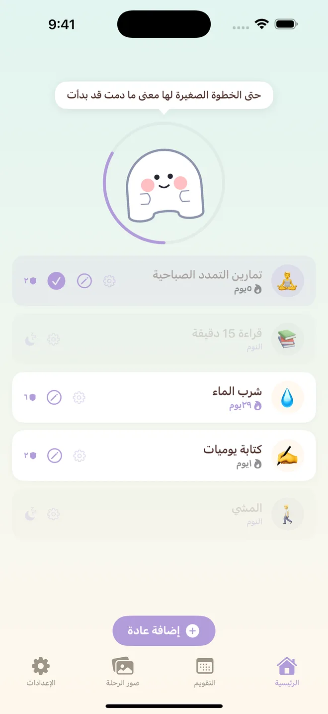
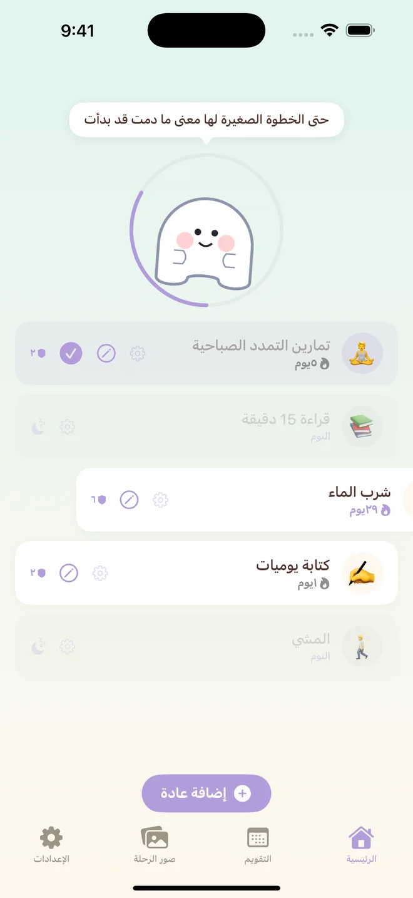
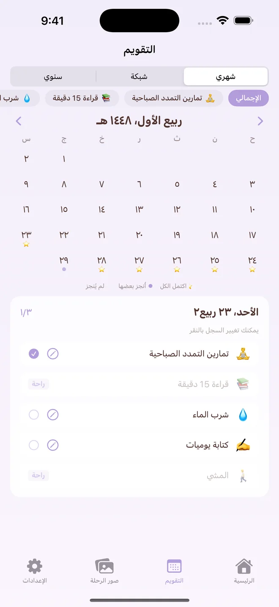

أشعر أن الحظ يحالفني اليوم! لا دليل على ذلك!
رفيق يحب الدردشة. وعادات أكثر متعة.
حوّل عاداتك اليومية
إلى مغامرات.
أكمل جميع عادات اليوم واحصل على صورة سفر. مع تشجيع ماروتو و250 صورة تنتظر اكتشافك، لكل خطوة صغيرة متعة جديدة.
iPhone وiPad / مجاني مع إعلانات / دون حساب
تعرّف على ماروتو250صورة سفر يمكنك جمعها


أشعر أن الحظ يحالفني اليوم! لا دليل على ذلك!
250صورة سفر بانتظار اكتشافك
✓سجّل إنجازك بسحبة واحدة
FREEمجاني ودون حساب
MEET YOUR CHATTY LITTLE COMPANION
رفيق يحب الدردشة.
ومتعة تتجدد كل يوم.
يمدحك ويشجعك، وأحيانًا يضحكك بفكرة طريفة. ماروتو، جنية العادات، يرافق كل خطوة صغيرة. ماذا سيحكي لك اليوم؟
يا للروعة! أنجزت القراءة! ماروتو متأثر جدًا!
الراحة ليست أمراً سيئاً. أنا ماروتو أضمن لك ذلك!
استقرت سحابة فوق قمة جبل فوجي، فاشتهيت أنا أيضًا قبعة.

اختر موقفًا واكتشف بعض أحاديث ماروتو.
أمثلة على الرسائل الموجودة في التطبيق.
تحية صغيرة في كل زيارة.
تحيات تناسب وقت اليوم والفصول. وأحاديث عابرة قد ترسم ابتسامة على وجهك.
كل إنجاز يستحق التشجيع.
يفرح ماروتو معك حتى بالإنجازات الصغيرة، ليكون في الخطوة القادمة ما تتطلع إليه.
إلى جانبك في أيام الراحة أيضًا.
عندما لا تسير الأمور كما أردت، تجد تشجيعًا لطيفًا لتبدأ مجددًا بالوتيرة التي تناسبك.
01 — LITTLE BY LITTLE
خطوات صغيرة.
وأسباب جديدة للابتسام.
تمارين تمدد، أو صفحة من كتاب، أو كوب ماء. ابدأ بشيء صغير، وماروتو يشجعك طوال الطريق.
01

A SMALL STEP FORWARD
إنجازك!
بتمريرة واحدة.
مرّر لتحديد العادة التي أنجزتها. يمكنك أيضًا إلغاء الإنجاز أو تعديل السجلات السابقة من التقويم.
اضغط لتجربة إنجاز صغير
تجربة توضيحية على الموقع
سواء كان يومك حافلًا بالجهد أو لم تسر الأمور كما أردت، سيظل ماروتو يشجعك.
EVERY LITTLE DAY COUNTS
الأيام التي تواصل فيها
تصبح مصدر ثقتك.
تأمل تقدمك اليومي عبر التقويم الشهري وشبكة العادات والسجل السنوي. ويمكنك أيضًا تدوين ملاحظات لكل عادة.
02

02 — A WORLD OF LITTLE REWARDS
عادات كل يوم.
وعالم ينتظر اكتشافك.
250✦
صورة سفر يمكنك جمعها


واصل عاداتك واجمع ذكريات السفر.
عند إنجاز جميع عادات اليوم، تحصل على صورة واحدة من الرحلة. استمتع بـ250 صورة وبمذكرات سفر ماروتو ومعلوماته الطريفة. ويمكنك أيضًا الحصول على صور إضافية بمشاهدة إعلان فيديو.
شارك الصور ومذكرات السفر
كبّر صورك المفضلة وشارك الصورة والمذكرة عبر زر المشاركة. ويمكن إرفاق رابط التطبيق والوسم #MaruttoTracker أيضًا.
03 — AT YOUR OWN PACE
عادات تناسب إيقاع حياتك.
اضبط التطبيق وفق إيقاع حياتك
حدّد أيام ممارسة العادات والتذكيرات ووقت بداية اليوم الجديد. ويمكنك الاطلاع على إنجازات اليوم من أداة الشاشة الرئيسية.
درع يساعدك على الحفاظ على الاستمرارية
احصل على درع عند المواظبة 7 أيام. ويمكنك تشغيل أو إيقاف الميزة التي تحمي سلسلة إنجازك إذا نسيت يومًا عن غير قصد، من الإعدادات.
يدعم إعدادات 18 لغة ومنطقة
استمتع باللغة التي تفضلها في الشاشة وحوارات ماروتو ومذكرات السفر.
هل التطبيق مجاني؟
يمكن تنزيل التطبيق واستخدامه مجانًا. يتضمن إعلانات ومقاطع فيديو اختيارية للحصول على صور سفر إضافية.
هل أحتاج إلى حساب؟
لا تحتاج إلى إنشاء حساب. تُحفظ سجلات عاداتك على جهازك. متاح لأجهزة iPhone وiPad بنظام iOS 17 أو أحدث.